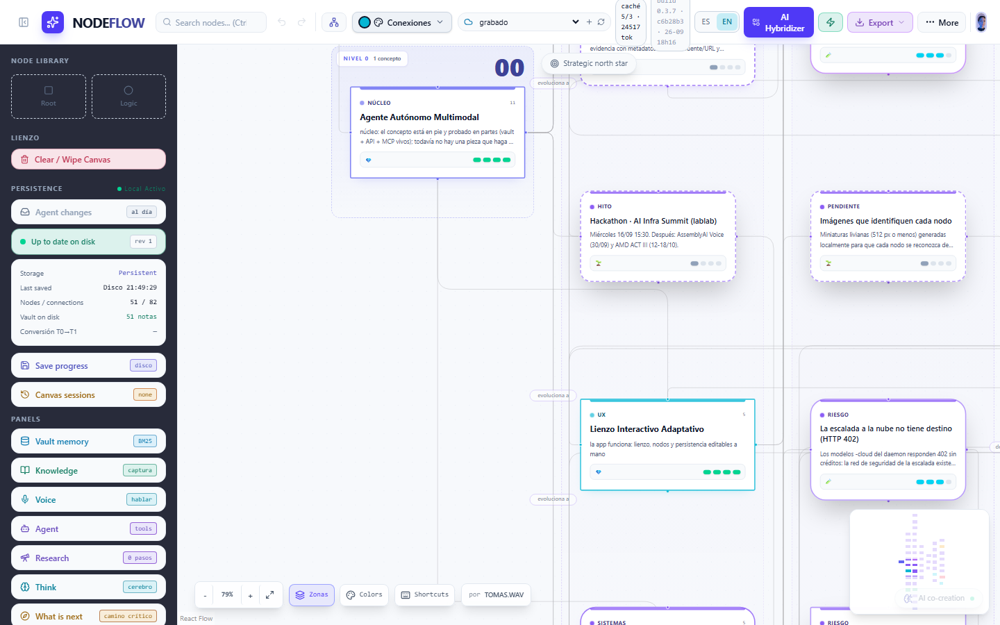

The real case of a development workflow assisted by IBM Bob 2.0: turn an idea into a versioned contract, have Bob implement it, and audit the delivery with tests and an independent review.
Tauri · Rust · React Flow · TypeScript · public repo · web demo, nothing to install
The idea is written as a contract committed before touching code. The agent implements against that contract and an independent review audits the delivery against the same text.
When the contract left something open — the cardinality of an event — the review caught it before it reached production.
One request, complete, exactly as it sits in the git history:
The steps are manual and deliberate: this is not an automatic voice-to-code pipeline.
A desktop app (Tauri + Rust + React Flow): a deterministic segmenter on the backend decides whether what you said is an idea, a correction or noise; a draft appears; when the turn closes, each topic becomes a real node —chained, draggable and connectable— and Ctrl+Z reverts it. Frictionless does not mean approving first: it means being able to undo afterwards. The UI ships in Spanish and English (the ES/EN switch is in the top bar).

What we do not claim: no parallelism, no subagents attributed to Bob. Only what is on the record —contracts, commits, summaries— not a line more.
A whole task handed to a coding agent produced 0 files in 80 tool calls. The same work, split into a piece (one pure function, exact signature, enumerated cases), was delivered in 1 attempt with 12 tests green.
Repo · github.com/NeonEden/nodeflow-ibm-bob
Web demo · nodeflow-ibm-bob.vercel.app (simulates voice: without the Rust backend there is no microphone)
Desktop app · signed Windows release, or npx tauri dev
A workflow where the idea is written before the code, the agent implements against that text and the delivery is audited independently — with IBM Bob 2.0 writing the engine and the evidence of every step in the repository.
Presented by Tomás · Sep 27, 2026 · IBM Bob 2.0 Hackathon